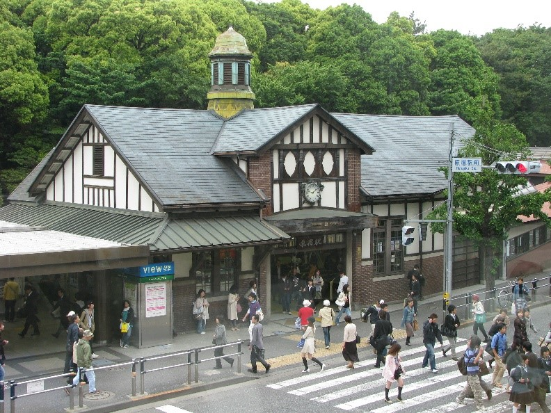

JUJUTSU Location
สถารที่ในเรื่อง JUJUTSU
บริเวณหน้าสถานี Harajuk เป็นที่ที่ยูจิกับเมกุมิ รออาจารย์โกโจ ด้านหลังจะมีป้ายร้านรองเท้า Oriental Traffic และร้านขายยา Matsumoto Kiyoshi

ที่ที่ยูจิกินไอติมระหว่างรออาจารย์
ด้านหลังจะเป็นร้าน Cosme สาขา Harajuku สังเกตได้จากตรงหน้าร้านและตู้ไฟสีน้ำตาล
ฉากที่อาจารย์โกโจมาถึงฮาราจูกุ
ที่ที่ถ่ายเป็นบริเวณหน้าสถานีฮาราจูกุ จะยังอยู่ในอาคารนิดนึงค่ะ
ด้านหลังอาจารย์โกโจจะเป็นบันไดเลื่อนขึ้นไปยังสถานี